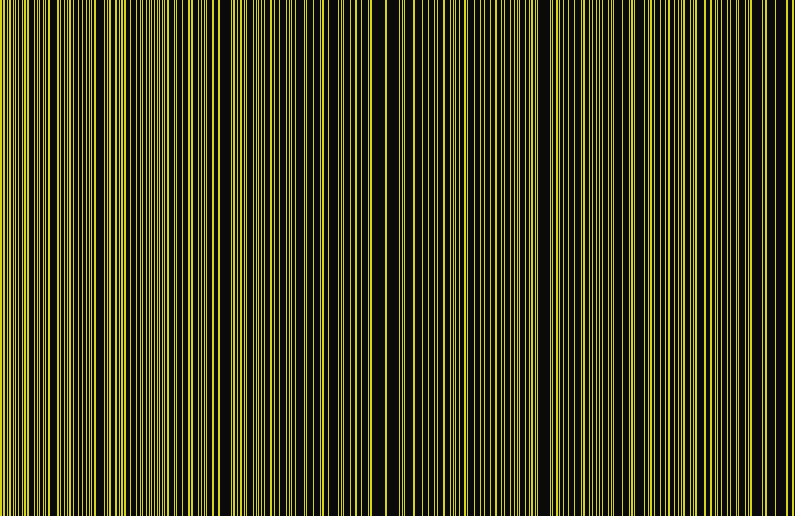

2025_exp/html_experiments · primes
Primes
2025_exp/html_experiments/primes_v1.html
Primes — 2025_exp/html_experiments; grouped under Fibonacci / Spiral / Growth. Signals: dom, fibonacci-spiral-growth.
Upgrade notes: Good candidate for grouped flavors with stronger palette and glyph-function integration.